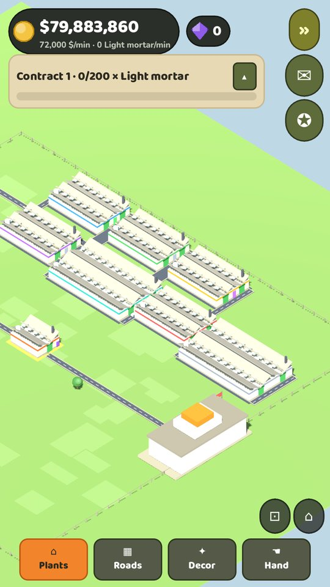
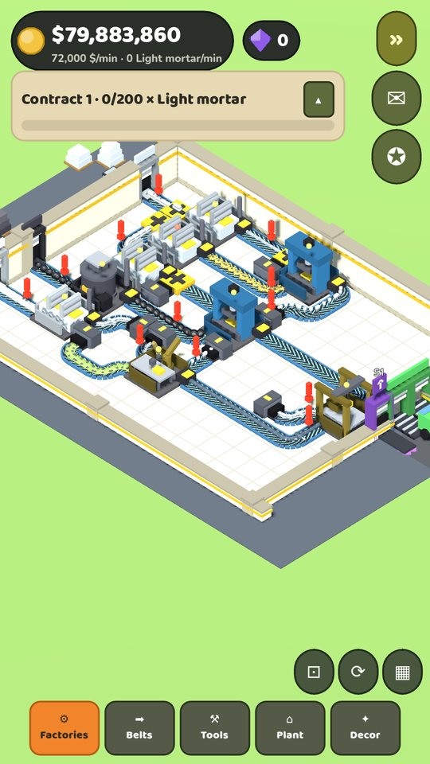
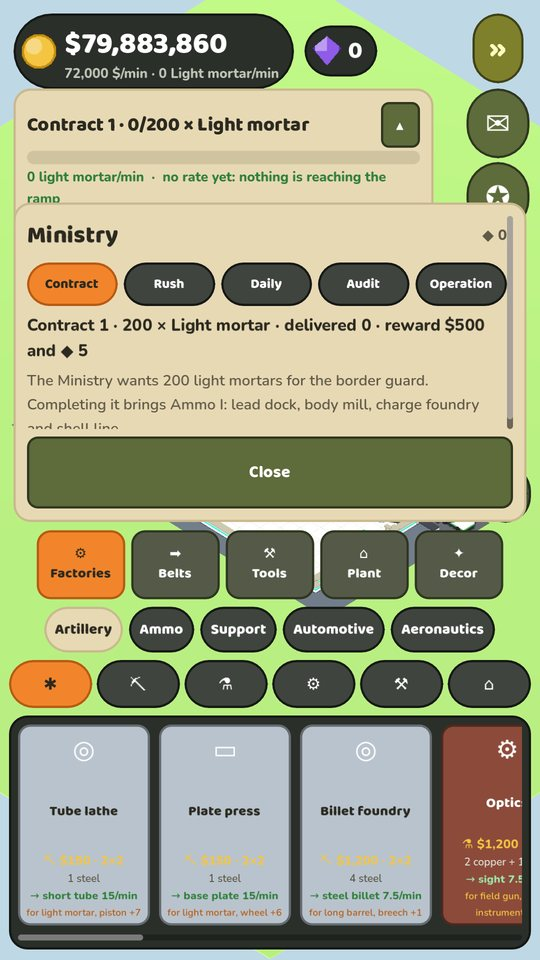

WARWORKS
A factory licensed by the Ministry of Defence. They set the contracts; you lay the belts. A factory game with real production chains, in a bright low-poly toy style, played vertically with one thumb.
My role: solo game designer, director and tester · implementation AI-assisted · trailer and screenshots rendered from the current build



Design
- 5 production branches and 11 licences, from mortars to fighter jets and missiles; vehicles travel by rail, parts by belt.
- Multi-factory industrial map with player-built roads and trucks between factories.
- The Ministry: 8 contracts, rush orders, daily orders, audits and operations that keep old production lines useful.
- Prestige across 6 nations, each with its own rule; the last one gives half your land to the army.
- The game tells you what's wrong: jammed belts light up red, a stopped machine names the part it's missing, and the production sheet points at the real bottleneck.
- Fair F2P: no artificial waits, no paywalls, no forced ads; everything can be completed without paying.
QA
- Closed beta with testers: player reports are reproduced, fixed and covered by a new test.
- Every new test is checked by breaking the code on purpose, to prove it actually catches the bug.
- 11 test batteries (simulation, grid, languages, values, throughput, play time, fuzzing…) plus 5 tests that tap the running game with synthetic touches.
- Fuzzer: 30,000 random player actions per run, checking the game never breaks its own rules.
- An accessibility round driven by tester feedback, rebuilding how doors and connections are explained.
Balancing story: simulate the whole game, don't guess
I built a simulation that plays the entire game with the real data tables: the player buys their bottleneck and waits when they can't afford it. The first run showed that contracts paid about 5× what the factory earned, that contract 2 paid worse than contract 1, and that contracts didn't progress while the game was closed. After rebalancing, contracts pay about 0.9× the factory and the measured minimum play time is 12.6 hours. The simulation reruns every time a number changes.